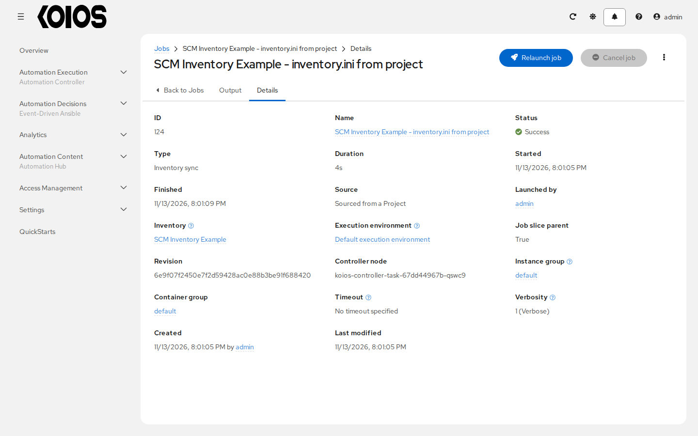

4. Inventory File Importing
Automation controller can import an inventory file, inventory plugin configuration or dynamic inventory script from a source-controlled project. Edit the content in its source repository, sync the project, then sync the inventory source to import the changes, including associated group_vars and host_vars files. The platform does not provide a browser editor for these source files.
Any imported hosts will have a description of “imported” by default. This can be overridden by setting the _awx_description variable on a given host. For example, if importing from a sourced .ini file, you could add the following host variables:
[main]
127.0.0.1 _awx_description="my host 1"
127.0.0.2 _awx_description="my host 2"
Similarly, group descriptions also default to “imported”, but can be overridden by the _awx_description as well.
For migrating inventory scripts to source control, see Export old inventory scripts in the User Guide.
4.1. Custom Dynamic Inventory Scripts
A custom dynamic inventory script stored in version control can be imported and run. This makes it much easier to make changes to an inventory script — rather than having to copy and paste one into automation controller, it is pulled directly from source control and then executed. The script must handle the credentials needed for its work and implement the Ansible dynamic inventory script interface. Inventory updates run ansible-inventory inside an execution environment. Include the script’s Python libraries, inventory collections and other runtime dependencies in that execution environment image, not in a virtual environment on the controller server. Select the appropriate execution environment for the inventory source.
You can specify environment variables when you edit the SCM inventory source itself. For some scripts, this will be sufficient, however, this is not a secure way to store secret information that gives access to cloud providers or inventory.
The better way is to create a new credential type for the inventory script you are going to use. The credential type will need to specify all the necessary types of inputs. Then, when you create a credential of this type, the secrets will be stored in an encrypted form. If you apply that credential to the inventory source, the script will have access to those inputs like environment variables or files.
For more detail, refer to Credential types.
4.2. SCM Inventory Source Fields
The source fields used are:
source_project: project to usesource_path: relative path inside the project indicating a directory or a file. If left blank, “” is still a relative path indicating the root directory of the projectsource: usescmfor an inventory sourced from a project. Thefilesource type is not supported by the inventory update task system.source_vars: for anscmsource, these values are added to the inventory update environment unless the name is already present or blocked by controller settings. Store secrets in credentials rather than source variables.
An update of the project automatically triggers an inventory update where it is used. An update of the project is scheduled immediately after creation of the inventory source. Neither inventory nor project updates are blocked while a related job is running. In cases where you have a big project (around 10 GB), disk space on /tmp may be an issue.
You can specify a location manually in the automation controller User Interface from the Create Inventory Source page. Refer to the Inventories section of the User Guide for instructions on creating an inventory source.
This listing should be refreshed to latest SCM info on a project update. If no inventory sources use a project as an SCM inventory source, then the inventory listing may not be refreshed on update.
For inventories with SCM sources, the Job Details page for inventory updates show a status indicator for the project update as well as the name of the project. The status indicator links to the project update job. The project name links to the project.

An inventory update can be performed while a related job is running.
4.2.1. Supported File Syntax
Automation controller uses the ansible-inventory module from Ansible to process inventory files, and supports all valid inventory syntax that automation controller requires.